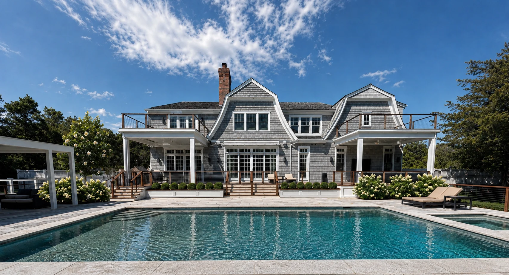
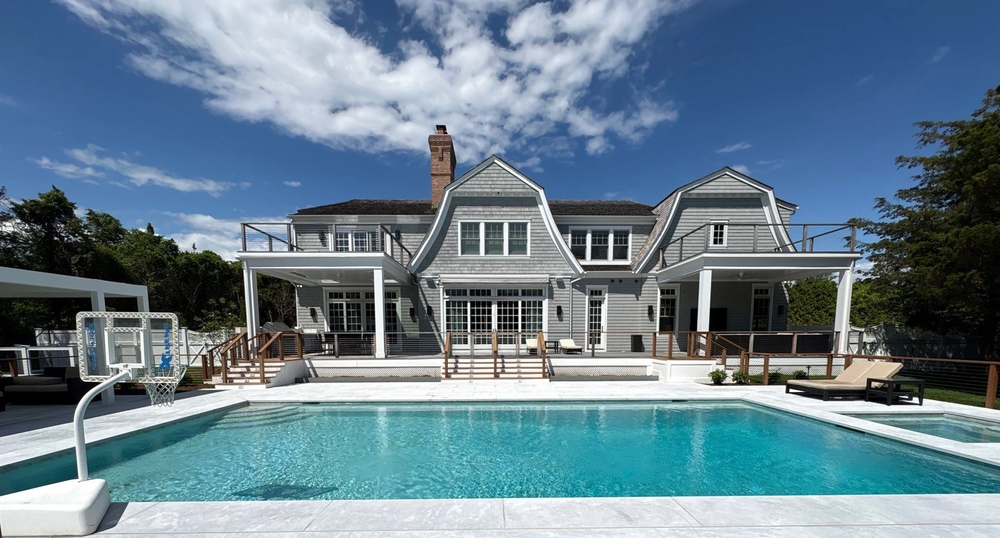
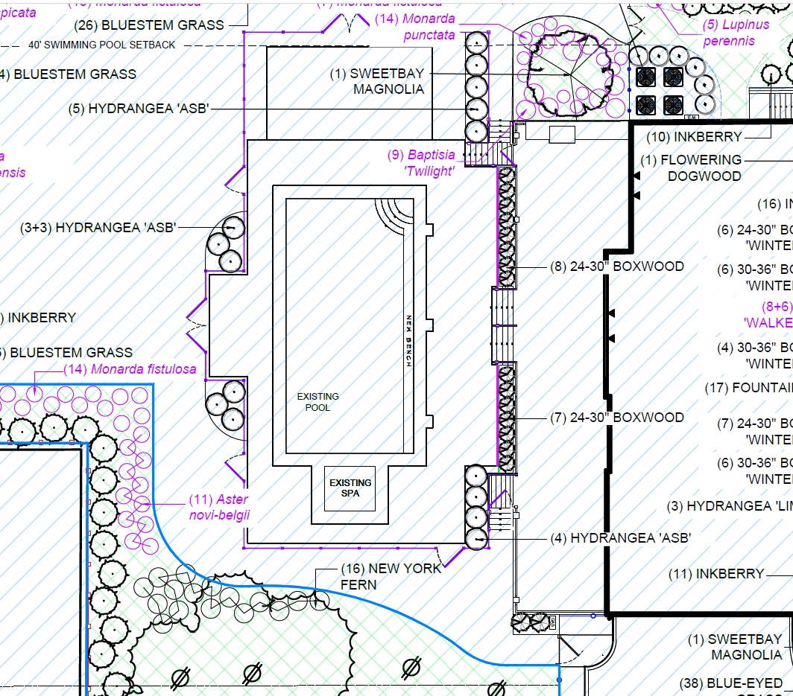
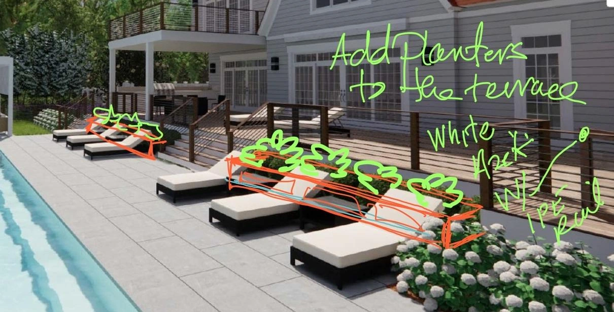
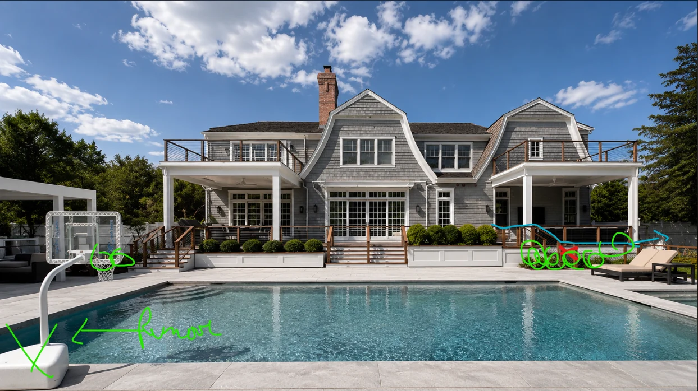
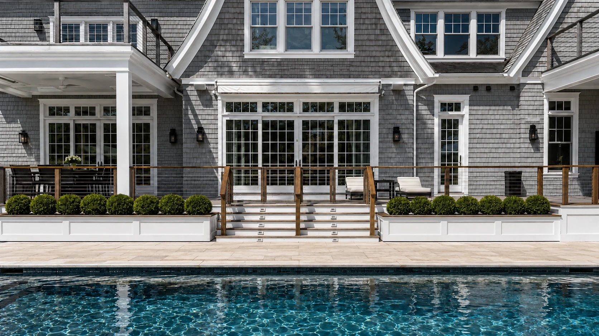
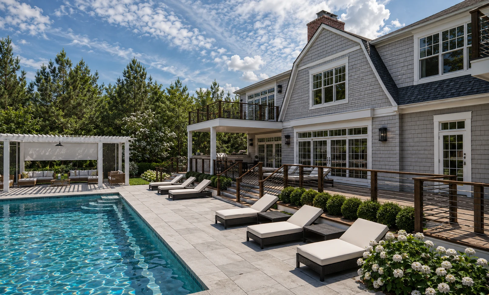
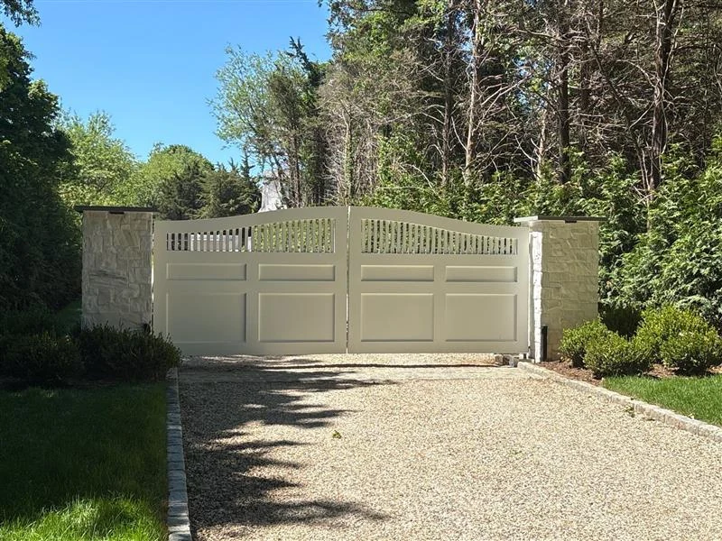
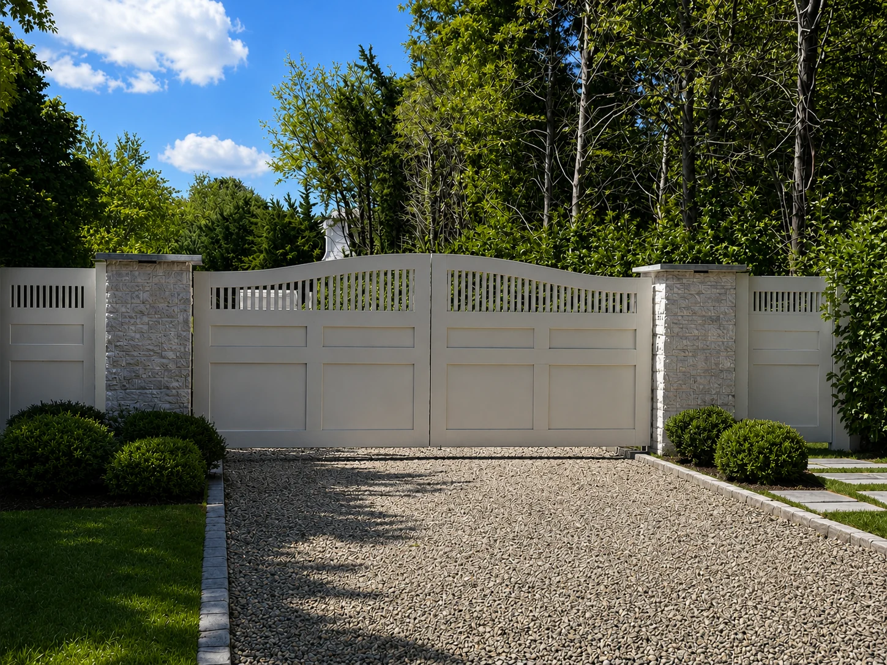

Poolside Terrace
Reading a proposal.
Visualizing a terrace.
- Year
- 2026
- Role
- Creative Design Intern
- Focus
- Proposal analysis · Visualization
- Tools
- Photoshop · Luma · ChatGPT

Understand the site.
Read the design intent.
For Poolside Terrace, I analyzed a contractor’s proposal and caught a planter-height error that had carried into an early rendering. Site photographs, supplied markups, and a planting-plan detail helped connect the written specifications to the intended design.
The key relationship was between the house, raised terrace, and pool. The visual studies explore how white planters and planting could define the terrace edge while keeping the central steps legible.






My role: interpretation and visualization. Landscape design direction, plans, and supplied site references: The Laurel Group design team. Renderings are AI-assisted concept studies.
Catch the discrepancy.
Clarify the design intent.
The contract incorrectly listed one planter at 28″ high. Both planters were intended to be 18″ high, with different lengths. I identified the discrepancy during my proposal review and corrected the height in the later renderings.
18′ × 1′8″
18″ high · corrected design intent
14′ × 1′8″
18″ high · corrected design intent
- Cladding
- ¾″ Versatex PVC with three recessed panels per planter.
- Top caps
- ¾″ Ipe caps contrast with the bright-white painted finish.
- Deck edge
- Approximately 60′ of 18″-high PVC skirting, with matching recessed-panel detail.
- Awning cover
- Versatex PVC cover matching the existing fascia and crown detailing.
Both planter heights reflect the corrected 18″ design intent. Lengths and widths remain approximate proposal dimensions; materials are drawn from the contractor’s proposal. The images are concept visualizations.
From the early error
to a corrected view.
The annotated review reference below captures the earlier rendering with unequal planter heights, caused by the contract error I picked up on. It documents the issue before the correction, alongside other planting and site revisions.
I adjusted the later renderings so both planters are 18″ high. The corrected frontal detail below and the opening overall view show the consistent height, recessed panels, and darker top caps. The oblique view adds context for the terrace and pool.






Carry the same clarity
to the entrance.
A separate entrance study explores revised side panels and planting around the existing gates. Pairing the site reference with the concept keeps the change easy to locate. This entrance study has its own scope, separate from the terrace proposal.



